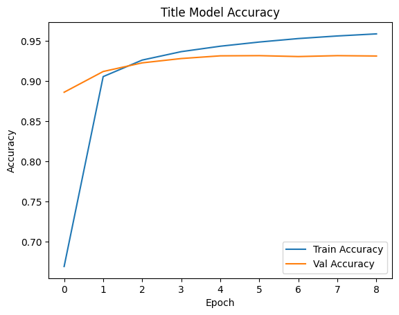
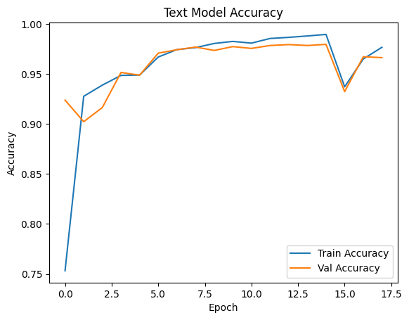
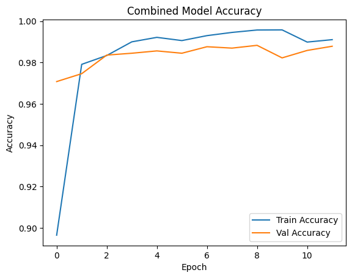
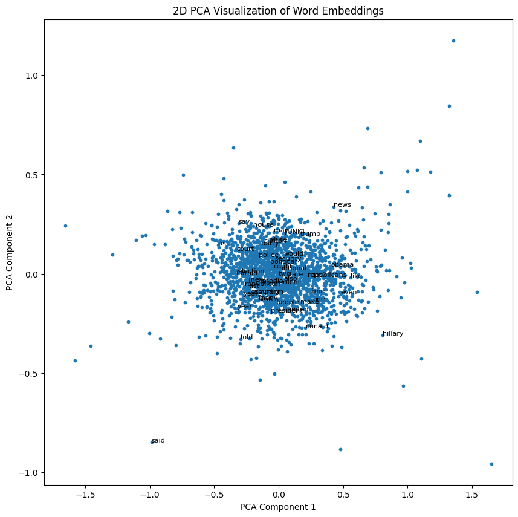

With the rise of social media and online news platforms, the volume of information being shared has skyrocketed, creating an urgent need for automated systems that can reliably distinguish between credible news and fabricated stories.
In this blog post, we’ll explore how machine learning can be used to tackle this problem. Using a dataset of news articles labeled as real or fake, we’ll build and evaluate three different deep learning models to determine whether it’s more effective to focus on the title, the full text, or both when detecting fake news. By comparing the performance of these models, we’ll provide insights into the best strategies for building robust fake news detection systems.
Dataset
The dataset we’ll be using comes from the paper “Detection of Online Fake News Using N-Gram Analysis and Machine Learning Techniques” by Ahmed H, Traore I, and Saad S (2017), published in the Lecture Notes in Computer Science series. This dataset was accessed via Kaggle, a popular platform for data science and machine learning resources. It contains news articles labeled as either real (0) or fake (1), with columns for the article title, full text, and the corresponding label. The dataset has already been preprocessed and split into training and testing sets, allowing us to focus on model development and evaluation.
Import Libraries
import osos.environ["KERAS_BACKEND"] ="tensorflow"import tensorflow as tfimport pandas as pdimport matplotlib.pyplot as pltimport nltknltk.download('stopwords')from nltk.corpus import stopwordsfrom keras import layersfrom keras import lossesimport kerasfrom keras.layers import TextVectorizationimport reimport stringfrom keras import utils
[nltk_data] Downloading package stopwords to /root/nltk_data...
[nltk_data] Package stopwords is already up-to-date!
Each row in the data frame corresponds to a single article. There are three relevant columns in this data frame: - title column that gives the title of the article - text column that give the full article’s text - fake column which outputs 0 if the article is true, and 1 if the article contains fake news.
2. Make the Dataset
We now create a make_dataset() function, which we call on our training dataframe. This will produce a tf.data.Dataset by: - Converting all text to lowercase to ensure uniformity. - Removing common stopwords (e.g., “the”, “and”) to reduce noise in the model. - Contructs a tf.data.Dataset with: - Input: A dictionary containing title and text. - Output: The fake column (0 or 1). - Uses dataset.batch(100) to optimize training efficiency.
stop_words =set(stopwords.words('english'))def make_dataset(input_data):""" This function processes the dataset by: 1. Converting text to lowercase 2. Removing stopwords from 'text' and 'title' 3. Contructing a tf.data.Dataset with ('title', 'text') as inputs and 'fake' as output. 4. Batching the dataset for efficient training Args: input_data: Pandas Dataframe containing the new dataset Returns: dataset: A batched TensorFlow dataset """# Make the text and title columns lowercase input_data['text'] = input_data['text'].str.lower() # Convert text column to lowercase using pandas str.lower() input_data['title'] = input_data['title'].str.lower() # Convert title column to lowercase using pandas str.lower()# Remove stopwords from the text and title columns input_data['text'] = input_data['text'].apply(lambda x: ' '.join([word for word in x.split() if word notin (stop_words)])) input_data['title'] = input_data['title'].apply(lambda x: ' '.join([word for word in x.split() if word notin (stop_words)]))# Construct dataset with 'title' and 'text as input, and 'fake' as output dataset = tf.data.Dataset.from_tensor_slices( ( {'title': input_data['title'],'text': input_data['text'] }, ( input_data['fake'] ) ) )# Batch dataset dataset = dataset.batch(100)return dataset
Dataset = make_dataset(training_df)
Validation Data
We can now split the dataset into: - 80% Training Set - 20% Validation Set
We use .take() and .skip() to extract the subsets.
The base rate is the accuracy of a model that always makes the same guess. We can determine the base rate for this data set by: - Extracting the fake column from the training dataset. - Counting how many articles are real (0) and fake (1). - Computing the base rate.
# Get an iterator for the 'fake' values on the training datasetfake_iterator = train.map(lambda article,fake: fake).as_numpy_iterator()# Convert to a list of valuesfake_list =list(fake_iterator)fake_list = [item for sublist in fake_list for item in sublist]# Count occurences of each labelnum_true =sum(1for label in fake_list if label ==0)num_fake =sum(1for label in fake_list if label ==1)print(f"Number of true articles: {num_true}")print(f"Number of fake articles: {num_fake}")# Calculate base ratetotal = num_true + num_fakemost_frequent =max(num_true, num_fake)base_rate = most_frequent / totalprint(f"Base rate: {base_rate}")
Number of true articles: 8603
Number of fake articles: 9397
Base rate: 0.5220555555555556
The base rate of about 0.5221 tells us that our base model would predict ‘fake news’ correctly about 52.21% of the time.
Text Vectorization
The purpose of text vectorization is to covert text into a numerical format for input into a neural network. - standardization() is used to convert text to lowercase and remove punctuation. - The TextVectorization layer limits vocab to 2000 unique words, converts words to integers, and ensures each sequence has a fixed length of 500. - .adapt() is used to learn vocabulary from the training titles. - The Embedding layer converts word indices into dense vectors of fixed size (embedding_dim = 256).
#preparing a text vectorization layer for tf modelsize_vocabulary =2000def standardization(input_data): lowercase = tf.strings.lower(input_data) no_punctuation = tf.strings.regex_replace(lowercase,'[%s]'% re.escape(string.punctuation),'')return no_punctuationembedding_dim =256# Embedding vector size# Shared text vectorization layer (for both title & text)text_vectorize_layer = TextVectorization( standardize=standardization, max_tokens=size_vocabulary, output_mode='int', output_sequence_length=500# Ensures consistent input size)# Adapt on both titles and texttext_vectorize_layer.adapt(train.map(lambda x, y: tf.concat([x["title"], x["text"]], axis=0)))# Shared embedding layerembedding_layer = layers.Embedding( input_dim=size_vocabulary, output_dim=embedding_dim, mask_zero=True# Helps LSTM ignore padding tokens)
3. Create Keras Models
We want to answer the following question: > When detecting fake news, is it most effective to focus on only the title of the article, the full text of the article, or both?
The most effective way to answer this question is to create three Keras models with different inputs. We will then assess and compare their performances.
Model Visualization Function
Part of our analysis of models will be visualization the training and validation accuracy to compare performance. vizualize_model() will plot both the training accuracy and validation accuracy, which we can use on each of our three models to help us determine if one model is better than another.
This first model will only use the article title as an input. The model then vectorizes and embeds the title. We use an LSTM layer to extract sequential features. This outputs a single neuron with a sigmoid activation for binary classification.
def create_title_model(): title_input = layers.Input(shape=(1,), dtype=tf.string, name="title")# Process title title_vectorized = text_vectorize_layer(title_input) title_embedded = embedding_layer(title_vectorized) title_lstm = layers.LSTM(64)(title_embedded)# Output layer output = layers.Dense(1, activation="sigmoid")(title_lstm)# Build model model = keras.Model(inputs=title_input, outputs=output, name="title_model")# Compile model model.compile(loss="binary_crossentropy", optimizer=keras.optimizers.Adam(learning_rate=0.0001), metrics=["accuracy"])return modeltitle_model = create_title_model()title_model.summary()
title_model begins with an input layer for the title text, which is passed through a shared TextVectorization layer to convert the text into integer sequences. These sequences are then fed into a shared Embedding layer, which maps the words into dense vectors of fixed size. The embedded title is processed by an LSTM layer to capture sequential dependencies in the text. Finally, a dense output layer with a sigmoid activation produces the binary classification (real or fake news). This model is lightweight and efficient but relies solely on the limited information provided by article titles.
First Model Training and Visualization
We can increase the number of Epochs used when we implement early stopping. Early stopping will stop out model when its performance starts to decrease, and prevents overfitting.
plot_training(title_history, "Title Model Accuracy")

Third Model Performance Analysis
Our title model ended with a validation accuracy of about 93%. This is still a high performance, but we would like to get a score of at least 97%. This suggests the titles alone may not be enough information to reliably distinguish between real and fake news.
Second Model
In the second model, we only use the article text as an input. This model is similar to model 1, but uses an LSTM layer to capture long-range dependencies in an article text.
def create_text_model(): text_input = layers.Input(shape=(1,), dtype=tf.string, name="text")# Process text text_vectorized = text_vectorize_layer(text_input) text_embedded = embedding_layer(text_vectorized) text_lstm = layers.LSTM(64, use_cudnn=False)(text_embedded)# Output layer output = layers.Dense(1, activation="sigmoid")(text_lstm)# Build model model = keras.Model(inputs=text_input, outputs=output, name="text_model")# Compile model model.compile(loss="binary_crossentropy", optimizer=keras.optimizers.Adam(learning_rate=0.0001), metrics=["accuracy"])return modeltext_model = create_text_model()text_model.summary()
Like the title_model, text_model uses shared TextVectorization and Embedding layers to preprocess the input. However, the text input is significantly longer, so the LSTM layer has to handle much larger sequences. This model captures more detailed contextual information from the article text, which explains its higher validation accuracy compared to the title_model. However, the increased complexity also results in longer training times and higher computational costs.
plot_training(text_history, "Text Model Accuracy")

For the text model, the validation accuracy is about 97%, but there was a drop in validation accuracy during training which we can see in the visualization. This model took significantly longer to train due to the larger input size. We can deduce that the full text of an article contains more informative features for detecting fake new.
Model 3
For the third model, we use both the article title and text as inputs. We extract features separately using LSTM layers for both. Then we merge the two feature vectors and process them through a Dense() layer with dropout to prevent overfitting. This outputs a sigmoid neuron for classification.
The combined_model processes the title and text separately through shared TextVectorization and Embedding layers, ensuring consistency in how words are represented. Each input branch includes an LSTM layer to capture sequential information. The outputs of these branches are concatenated and passed through a dense layer with dropout for regularization. Finally, a sigmoid output layer produces the classification. This architecture allows the model to combine the concise information from titles with the detailed context from the full text, resulting in the highest validation accuracy of the three models. The visualization clearly shows how the two input branches merge, demonstrating the model’s ability to integrate multiple sources of information effectively.
plot_training(combined_history, "Combined Model Accuracy")

For the title and text model, the validation accuracy is about 99%, which means this model performed the best out of all three models. The training was also stable, with minimal overfitting. This suggests that combining informaation from both the title and text provides the best results.
Recommendation
Based on the results, algorithms should use both title and text of an article when seeking to detect fake news.
4. Model Evaluation
test_url ="https://raw.githubusercontent.com/pic16b-ucla/25W/refs/heads/main/datasets/fake_news_test.csv"test_df = pd.read_csv(test_url)test_dataset = make_dataset(test_df)# Evaluate the best model (combined_model)test_loss, test_accuracy = combined_model.evaluate(test_dataset)print(f"Test Accuracy: {test_accuracy:.4f}")
If we used the title and text model as a fake news detector, we would be correct in predicting fake news about 98.5% of the time.
5. Embedding Visualization
To better understand how our model distinguishes between real and fake news, we visualized the learne word embeddings using PCA.
Note: I initially used plotly for the embedding visualization, but it wouldn’t show up on my blog. So I switched to using matplotlib.
from sklearn.decomposition import PCAimport numpy as np# Get the embedding weightsweights = embedding_layer.get_weights()[0]# Get the vocabularyvocab = text_vectorize_layer.get_vocabulary()# Reduce dimensionality using PCApca = PCA(n_components=2)weights = pca.fit_transform(weights)embedding_df = pd.DataFrame({'word' : vocab,'x0' : weights[:,0],'x1' : weights[:,1]})
# Plot the embeddings using matplotlibplt.figure(figsize=(10, 10))plt.scatter(embedding_df['x0'], embedding_df['x1'], s=10) # s controls the size of the dots# Annotate a subset of words for clarityfor i, word inenumerate(embedding_df['word'][:50]): # Label the first 50 words plt.annotate(word, xy=(embedding_df['x0'][i], embedding_df['x1'][i]), fontsize=8)plt.title("2D PCA Visualization of Word Embeddings")plt.xlabel("PCA Component 1")plt.ylabel("PCA Component 2")plt.show()

Some clumping of words I notices based on the embeddings visualization are: - ‘illegally’, ‘attempted’, ‘drug’ around (0.04, 0.08). - These words are often associated with negative news stories, which are common with fake news. - ‘territory’, ‘review’, ‘whether’, ‘mexico’, ‘oppose’ around (-0.22, 0.1). - These words are more neutral and factual, which is usually associated with real news.
Based on these, we notice that our model has started to associate emotionally charged words with being correlated to fake news, while more neutral words are associated with real news.